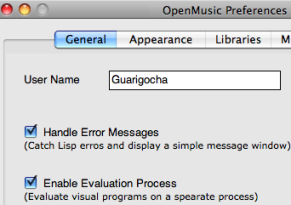

Evaluation
Evaluating a box means calling its inner function and parameters. If this box is connected to others, all the upstream boxes will be evaluated one by one. Thus, evaluating one box can trigger a more or less lengthy evaluation chain. This chain refers to the calculus of a function tree, or, in other words, of the visual program.
Evaluating Boxes and Outlets
 |
In any case, the whole box, that is all of its outputs, are computed during the evaluation. |
The Listener window displays the different messages and the results of evaluations. |
In a program, a box evaluates all boxes connected to its inputs, and evaluates its inputs from left to right . Therefore, the evaluation of a patch always goes bottom-top and left right , graphically speaking. |  |
 | Box inlets generally have a default value. This is why a box can often be evaluated even if part or the totality of its inlets are not connected to other boxes. Default values can be visualized by hovering the mouse over an inlet. |
To reset the content of a box to its default value, press |  The same chord, before and after it was reinitialized. |
Locking / Unlocking a Box
 Locked boxes : the values of the locked boxes are fixed and do not depend on the box inputs anymore. | To lock a box, select it and press
To unlock the box, press |
Several other evaluation modes can be used for controlling the transmission of resulting data in a program, or to perform specific tasks.
Evaluation Control
The This option also enables to stop ongoing computations can via the "Abort" command (see below). |  |
When the enable evaluation process option is selected, it is possible to abort evaluations :
Select the Listener window
Abort using the
Lisp / Abortmenu or the shortcutCmd+a.
The handle error messages option in the OM preferenxes allows, to some extent, to limit the consequences of possible programming errors and prevent OM from crashing. If an error occurs, a message is displayed in a pop up window.